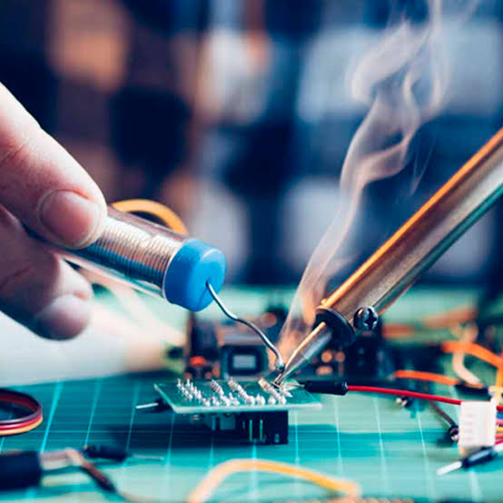

Reparação eletrônica
Avaliação e reparo de falhas em equipamentos eletroeletrônicos de uso pessoal e doméstico, conforme análise técnica.
Serviços de reparação e manutenção de equipamentos eletroeletrônicos de uso pessoal e doméstico, com atendimento em Campinas – SP.
Cada equipamento merece uma avaliação cuidadosa. Entre em contato, descreva o problema e confirme a disponibilidade do atendimento antes de levar ou enviar qualquer item.
Avaliação e reparo de falhas em equipamentos eletroeletrônicos de uso pessoal e doméstico, conforme análise técnica.
Verificação de componentes e conexões para identificar possíveis causas de mau funcionamento.
Orientação e cuidados de manutenção compatíveis com o tipo, estado e características do equipamento.
A execução de cada serviço depende de avaliação prévia, disponibilidade de peças e confirmação do escopo. Nem todos os modelos ou tipos de equipamento podem ser atendidos.
Informação clara e alinhamento prévio ajudam você a decidir com tranquilidade.
Entendimento do defeito relatado e análise da possibilidade de reparo.
Condições, custos e prazo estimado são alinhados antes da aprovação do serviço.
Atenção aos equipamentos e às informações fornecidas pelo cliente.
Canal direto para tirar dúvidas e acompanhar as combinações do atendimento.
Imagens ilustrativas relacionadas ao universo da eletrônica e da manutenção técnica.
Tecnologia e acompanhamento de equipamentos.

Detalhes e precisão no trabalho eletrônico.
Inspeção de componentes e conexões.

Imagem ilustrativa de instalações técnicas.
O atendimento é combinado diretamente, de acordo com o equipamento e a necessidade apresentada.
Envie uma mensagem com o tipo de equipamento, marca/modelo e uma descrição do problema.
Verificamos se o equipamento e o serviço estão dentro do escopo de atendimento.
Quando aplicável, são informados o diagnóstico, o orçamento e o prazo estimado para sua aprovação.
O serviço só é realizado após alinhamento das condições e autorização do cliente.
Entre em contato para explicar sua necessidade e consultar a disponibilidade do atendimento.